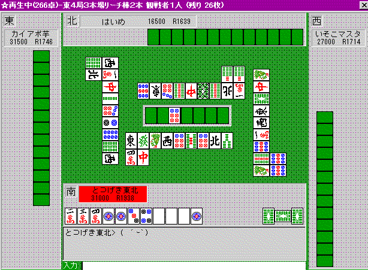

任意の数牌が場に出る平均個数
全ての研究への基礎として 1999/12/27 とつげき東北
当たり牌がどの程度他家に使われるのか？ ３面待ちを残すのとトイツ＋リャンメンを残すので、どちらが形テンを狙いやすいか？
大部分の麻雀技術研究の一つの基礎として、「任意の数牌がどの程度他家のメンツに使われるのか」を計算する。
（結論だけ見たい人は青字の「結論」に飛んで下さい）
まずは他家のメンツ作りの完成形を大胆にモデル化してみる。
・相手は常にメンゼンチンイツ・シュンツ形のテンパイ形であり、ある他家とある他家の染め色は必ず別である。
このようなモデルを選択したのは、次のような理由による。
麻雀では、３人の他家がそれぞれ４メンツと頭を完成させるために打牌する。
通常はマンズ・ピンズ・ソーズそれぞれにこだわりなくメンツを作るから、完成するメンツは比較的分散する。３人全員でまとめてマンズ・ピンズ・ソーズを使うのであるから、平均すれば１人あたり一色分で４メンツを作ると考えることができる。字牌の使用については考慮していないが、字牌が使用されることによって「任意の数牌の出やすさ（少なくとも数牌の端・中などによる使用率の比）」はほぼ変化を受けないものと考えられる。
そこで「任意の数牌が使われる個数」の問題では、相手一人がチンイツに染めているようなモデルを考えて問題ない。
また、シュンツ形に限定したのは、トイツやアンコは基本的に孤立で作ることが可能であるために、「ある任意の数牌」がアンコであることを合理的に推察することはほぼ不可能だからである。経験やカンごときでもどうせ推測不可能なものであり、このような単純化は妥当である。
上記のモデル化によって、ある一人のメンツ構成を次のように考えることができる。
４メンツを、次のうちから４セット、ランダムに選択する。
１２３ ２３４ ３４５ ４５６ ５６７ ６７８ ７８９
頭候補として、次のうちから１つ、ランダムに選択する。
１ ２ ３ ４ ５ ６ ７ ８ ９
とすると、例えば牌「１」が他家に使用される確率を次のように求めることができる。
牌種１について
メンツに使用される個数 メンツに不使用（余る）個数 その確率
０ ４ Comb（4,0）×（1/7）^0×（6/7）^4
１ ３ Comb（4,1）×（1/7）^1×（6/7）^3
２ ２ Comb（4,2）×（1/7）^2×（6/7）^2
３ １ Comb（4,3）×（1/7）^3×（6/7）^1
４ ０ Comb（4,4）×（1/7）^4×（6/7）^0
Comb（ｘ、ｙ）はコンビネーションの略。統計記号では ｘＣｙ である。
残り枚数の期待値は、これより約 8232/2400 枚。
また頭候補の牌の分 1/9 を引いて、「他家のメンツに使用されない１の個数平均」が求まる。
２〜９についても同様に計算すると、次のようになる。
結論：任意の数牌が他家メンツに使用される平均個数
「１（９）」が他家のメンツに組み込まれている（または他家のメンツに必要である）平均個数は 0.681個。
「１（９）」が他家のメンツに不要である平均個数は 3.319個。
（不要メンツが切られると仮定して）王牌を考慮して「１（９）」が最終的に場に出る平均個数は 2.937個。
「２（８）」が他家のメンツに組み込まれている（または他家のメンツに必要である）平均個数は 1.253個。
「２（８）」が他家のメンツに不要である平均個数は 2.747個。
（不要メンツが切られると仮定して）王牌を考慮して「２（８）」が最終的に場に出る平均個数は 2.365個。
「３〜７」が他家のメンツに組み込まれている（または他家のメンツに必要である）平均個数は 1.824個。
「３〜７」が他家のメンツに不要である平均個数は 2.176個。
（不要メンツが切られると仮定して）王牌を考慮して「３〜７」が最終的に場に出る平均個数は 1.641個。
補足と考察
これだけではなんのことかわからない人もいるかも知れないけど、これはめっっちゃ役に立つぞぉ(笑)
例えば、１枚切れのカンチャン２マン待ちと、６と８のシャンポン待ち、どっちが出やすいか？
この結論を見れば簡単。
「２」は、平均2.747個余るので、１枚切れの場合 1.747個余ることになる。
「６」は平均2.176個余るが、自分がトイツで持っているので残り0.176個、「８」の方は0.747個。合計0.923個余る。
基本的には、他家がメンツに使わない＝出る ということだから、この「余る個数」がそのまま当たり牌の出安さを表すわけよ・・・。明らかにこの場合カンチャン有利（ ≧∇≦）ｂ
１枚切れのカンチャン２マン待ちと、１と８のシャンポン待ちなら？
「２」は、1.747個余る。「１」は1.216個、「８」は0.747個で合計1.963個余る。
この場合シャンポン有利（ ≧∇≦）ｂ
同じように、１枚切れのカンチャン２マン待ちと、１枚切れの１と９のシャンポン待ちの場合は、これまたシャンポン有利・・・と出せるわけだ。
この「とつモデル」に、仮に誤差がありまくるとしても、ここまで明確な差が出れば充分実戦で使えます（￣ー￣）。
このようにして、全ての待ちについて、どれが出やすいか、なんてのが一通りわかる。
モデルは単純ではあるけど、下らない直感よりは１００倍も正確だし、うまく補正を加えれば、あらゆる他の研究に応用できると思う。
例えば・・・チートイ１シャンテンから、トイトイに行った方がよい状況はどんな時か、とか・・・。
てゆうか、けっこう使えるなこれ・・・「攻めの姿勢を崩すな」とか書いてある麻雀雑誌１００冊より、この表１つ持つことをお勧めする。

ここでね、４ピン切って２３ピン待ちにした方が出やすいのか、２５ピン待ちのままの方が良いのか、の判断ができるわけ。
他にも、上述の理論から、９マンは本来もっと（少なくとも２枚）出てないとおかしい順目でしょ。でも出てない。誰かが頭にしてるかな、と思ってたらやっぱりそう。
１マンが序順にかなり切れて２マンはシュンツ候補になりにくく（通常の１とほとんど変わらないはず）、もう少し出ていても良い。
上家がアンコにしていた。
他家から見ても１ピン・白・南あたりは、この研究結果から見て出ていないとおかしい牌なわけで。
また６ピンが本来の値より多く出ていることから、他家の手はこのあたりで止まりやすい。まぁ３ピンが本来より出ていないけども、３ピンは本来このあたりで０．５枚くらい出ているのが普通で、まだ相手の手に入っているかどうかは怪しい。
上家は４５ピンを残していた。
「結果論」ではないよ。ちゃんと理論に基づいてゆってるわけやからね(笑)。